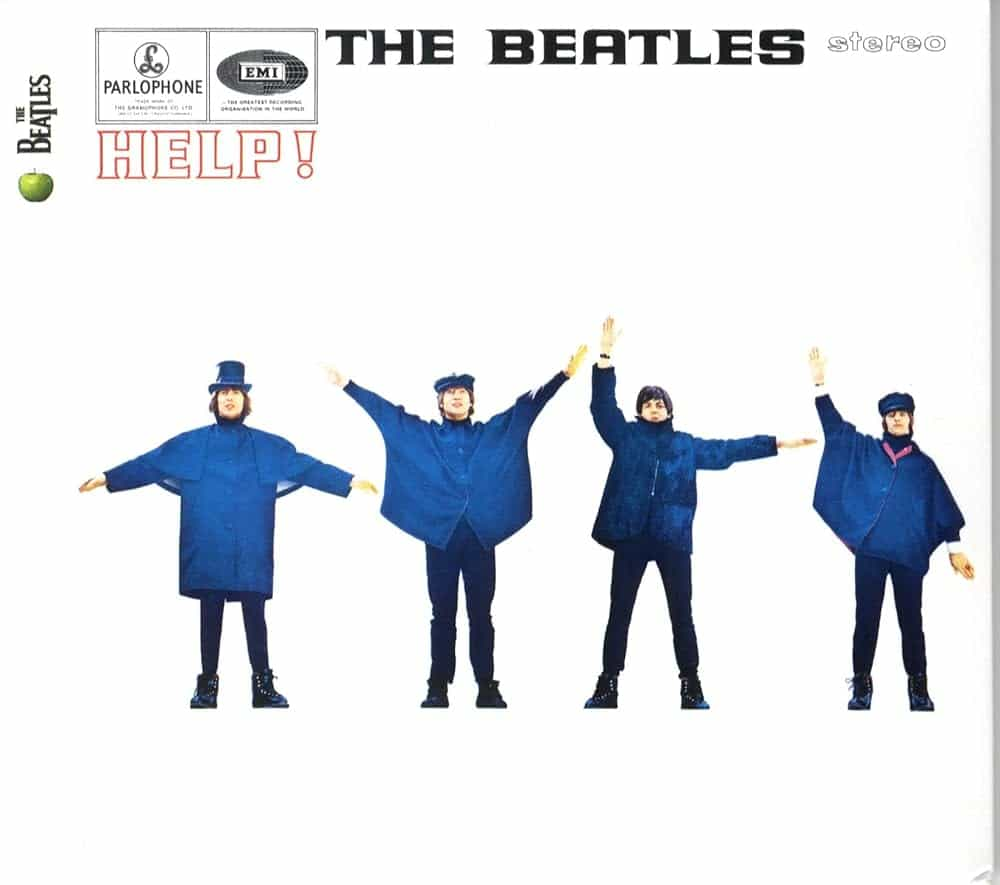

Help! (1965)
Help! marks the Beatles starting to stray from the formulaic sound of the early sixties, but is still firmly there -- not that there's anything wrong with that. Help! is easily my favorite of the Beatles' early career releases, with its title track a classic, as well as Ticket To Ride and I've Just Seen A Face displaying that the Beatles are no one-trick pony. Constructed by a 23-year old Paul McCartney with the melody coming to him in a dream, Yesterday, the album's penultimate track, remains one of the band's most revered, a universal tune that blends sorrow with a simplistic and repetitive piano riff. Some great high points, a forgettable middle, but a big step in the right direction for the Beatles.
Help! - 2:19
The Night Before - 2:34
You've Got To Hide Your Love Away - 2:09
I Need You - 2:28
Another Girl - 2:05
You're Going To Lose That Girl - 2:18
Ticket To Ride - 3:09
Act Naturally - 2:30
It's Only Love - 1:56
You Like Me Too Much - 2:36
Tell Me What You See - 2:37
I've Just Seen A Face - 2:05
Yesterday - 2:05
Dizzy Miss Lizzy - 2:56